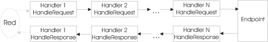

Creación de Servicios Web
Vamos a crear nuestros propios Servicios Web, que ofrecerán una serie de métodos a los que se podrá llamar mediante RPC desde cualquier lugar de Internet mediante protocolos estándar (mensajes SOAP).
Deberemos por lo tanto ser capaces de interpretar en nuestras aplicaciones los mensajes SOAP entrantes de petición para la invocación de un método. Posteriormente, invocaremos el método solicitado, y con el resultado que nos devuelva deberemos construir un mensaje SOAP de respuesta y devolvérselo al cliente.
Si tuviésemos que introducir nosotros el código para interpretar este mensaje de entrada, y generar manualmente el mensaje de respuesta, el desarrollo de Servicios Web sería una tarea altamente costosa.
Es más, si se forzase al programador a componer el mensaje SOAP manualmente cada vez que desarrolle un Servicio Web, es muy probable que cometa algún error y no respete exactamente el estándar SOAP. Esto sería un grave problema para la interoperabilidad de los Servicios Web, que es una de las características que perseguimos con esta tecnología.
Para evitar estos problemas, utilizaremos librerías que nos permitan leer o generar mensajes SOAP para la invocación de métodos remotos (RPC), como es el caso de la API JAX-WS (anteriormente JAX-WS).
Además, para facilitar aún más la tarea de desarrollar Servicios Web, normalmente contaremos con herramientas que a partir de las clases que implementan nuestro servicio generen automáticamente todo el código necesario para leer el mensaje SOAP de entrada, invocar el método, escribir el mensaje SOAP de salida, y devolverlo al cliente.
Por lo tanto, nosotros deberemos centrarnos únicamente en la tarea de programar la funcionalidad que implementan nuestros servicios, olvidándonos del mecanismo de invocación de éstos.
JAX-WS es una especificación estándar de Sun Microsystems, pero no todos los servidores de aplicaciones utilizan esta librería para gestionar los Servicios Web. Por ejemplo, es el caso de Weblogic, que aunque está basado en JAX-WS, mantiene algunas extensiones propietarias sobre dicha API. Nos centraremos por lo tanto en el desarrollo de servicios con Netbeans y Glassfish, que incorpora las últimas versiones de las librerías estándar.
Arquitectura de los Servicios Web
En las aplicaciones basadas en JAX-RPC/WS encontramos los siguientes elementos:
- Servicio: Elemento del servidor que implementa la funcionalidad de nuestro servicio. Normalmente utilizaremos una clase Java o un EJB.
- Cliente: Aplicación cliente que invoca los métodos del servicio remoto. La localización del servicio será transparente para el desarrollador de esta aplicación, que invocará los métodos del servicio de la misma forma que si éste fuese local.
- Stub: Capa en el cliente que implementa la interfaz del servicio, y utiliza internamente JAX-RPC/WS para construir los mensajes SOAP necesarios para invocar cada método de la interfaz, y para leer el mensaje de respuesta que recibamos. Este stub será el sustituto del servicio en el lado del cliente, la aplicación cliente ejecutará en él los métodos que ofrece el servicio, haciendo de esta forma transparente la localización del servicio para ella.
- Tie: Capa en el servidor que decodificará los mensajes SOAP entrantes con destino a nuestro servicio, y leerá de ellos el método que se quiere invocar y los parámetros de entrada que se proporcionan. Esta capa accederá al componente (clase Java o EJB) que implementa nuestro servicio, ejecutando dicho método en él. Una vez obtenido el resultado, generará un mensaje SOAP de respuesta y lo devolverá al cliente.
- JAX-RPC/WS: Librería que nos permitirá analizar y componer mensajes SOAP, y enviarlos a través de protocolo HTTP. Además proporciona listeners y servlets que permanecerán a la escucha en el servidor para recibir mensajes entrantes de peticiones a los servicios. Una vez recibida una petición, utilizará la capa Tie del servicio correspondiente para invocarlo, proporcionándole a esta capa el mensaje SOAP entrante. A diferencia de las capas anteriores, que son específicas para un servicio concreto, la librería JAX-RPC/WS es genérica, nos servirá para cualquier servicio web SOAP.

Las únicas capas que debemos implementar nosotros son el Cliente y el Servicio. En la implementación de estos componentes el uso de la librería JAX-RPC/WS será totalmente transparente para nosotros. No hará falta que introduzcamos código JAX-RPC/WS dentro de ellas. En el servicio simplemente implementaremos los métodos que queremos que ofrezca nuestro servicio, como si se tratase de cualquier clase Java, y en el cliente podremos invocar los métodos de este servicio como si invocásemos directamente los métodos de la clase Java.
Las capas Stub y Tie, son capas construidas a medida para la interfaz de nuestro servicio. Estás son las capas que utilizarán JAX-RPC/WS para generar y leer los mensajes SOAP que vamos a utilizar para invocar el servicio, y devolver la respuesta al cliente. Generarán o serán capaces de leer los mensajes apropiados para el caso concreto de los métodos que definimos en nuestro servicio, por lo que deberemos generar estas capas para cada servicio que desarrollemos. Afortunadamente, normalmente contaremos con herramientas que generen de forma automática estas capas a partir de la interfaz de nuestro servicio, por lo que no será necesario que el desarrollador de servicios trate directamente con JAX-RPC/WS en ningún momento.
Tipos de datos compatibles
Cuando trabajamos con JAX-WS, los tipos de datos que podremos utilizar como tipo de los parámetros y de valor de retorno de los métodos de nuestro servicio serán los tipos soportados por JAXB.
Podremos utilizar cualquiera de los tipos básicos de Java:
boolean byte double float int long short char
Además, también podremos utilizar cualquiera de los wrappers de estos tipos básicos:
java.lang.Boolean java.lang.Byte java.lang.Double java.lang.Float java.lang.Integer java.lang.Long java.lang.Short java.lang.Character
Las siguientes clases de Java también son aceptadas como tipos válidos por JAX-WS:
java.lang.String java.math.BigDecimal java.math.BigInteger java.util.Calendar java.util.Date javax.xml.namespace.QName java.net.URI
Además de estos datos, se permitirá el uso de colecciones cuyos elementos podrán ser de cualquiera de los tipos admitidos. Estas colecciones podrán ser arrays, tanto unidimensionales como multidimensionales, o clases del marco de colecciones de Java:
Listas: List ArrayList LinkedList Stack Vector Mapas: Map HashMap Hashtable Properties TreeMap Conjuntos: Set HashSet TreeSet
Las clases desarrolladas por nosotros también podrán ser usadas si cumplen ciertas condiciones:
- Debe tener al menos un constructor público sin parámetros.
- No debe implementar la interfaz RMI java.rmi.Remote.
- Todos sus campos deben ser tipos soportados por JAX-WS. Estos campos pueden
ser públicos, protegidos o privados. Para que JAX-WS sea capaz de
leer o establecer los valores de estos campos deberá cumplirse que:
- Los campos públicos no deben ser ni final ni transient.
- Los campos no públicos deben tener sus correspondientes getters y setters.
Si nuestros tipos de datos no cumplen estas características, o bien estamos trabajando con herramientas que no soportan estos tipos, deberemos construir manualmente marshallers y unmarshallers para nuestras clases utilizando JAXB. Su función será realizar la conversión entre nuestra clase Java y su correspondiente formato como documento XML.
Implementación del servicio: Fichero JWS
Para implementar los servicios deberemos crear una clase JWS, que consiste en una clase Java con anotaciones de la API Web Services Metadata for the Java Platform (JSR-181). Parte de los métodos de esta clase se ofrecerán como operaciones del servicio web. Para poder ofrecer los métodos de esta clase como servicio web deberemos generar las capas vistas anteriormente. Para ello contaremos con diferentes herramientas, que dependerán de la plataforma de desarrollo que utilizamos. Posteriormente veremos tanto las herramientas incluidas en JDK 1.6 como las herramientas de Weblogic.
La API Web Services Metadata for the Java Platform viene a estandarizar la forma en la que se definen los Servicios Web en Java. Anteriormente, cada plataforma definía su propia forma de crear servicios web, por lo que, por ejemplo, un servicio web desarrollado con el JWSDP de Sun no podía desplegarse directamente en Weblogic. Además, el fichero JWS contendrá toda la información necesaria para generar el servicio, por lo que no hará falta tener la información sobre el servicio dispersa en diferentes ficheros como ocurría antes.
Para crear la clase JWS que implemente el servicio deberemos crear una clase con un constructor sin parámetros (si no se crea ningún constructor por defecto la clase tendrá un constructor sin parámetros vacío), y con al menos la anotación @WebService. Los métodos públicos que definamos en esta clase serán por defecto las operaciones que ofrecerá el servicio aunque, como veremos más adelante, también podemos especificar mediante anotaciones los métodos que queremos que se publiquen como servicio. Por ejemplo, podemos implementar nuestro servicio como:
package es.ua.jtech.servcweb.conversion;
import javax.jws.WebService;
@WebService
public class ConversionSW {
public int euro2ptas(double euro) {
return (int) (euro * 166.386);
}
public double ptas2euro(int ptas) {
return ((double) ptas) / 166.386;
}
}
Con esto habremos implementado la funcionalidad del servicio como una clase Java ordinaria, sin necesitar tener conocimientos de ninguna librería adicional.
De forma opcional, podemos añadir al servicio un campo context en el que se inyectará un objeto WebServiceContext que nos dará acceso al contexto del servicio:
package es.ua.jtech.servcweb.conversion;
import javax.jws.WebService;
@WebService
public class ConversionSW {
@Resource
private WebServiceContext context;
...
}
Dado que realmente el servicio es un componente web, a través de este objeto podremos tener acceso a componentes de la API de servlets como la petición HTTP (HttpServletRequest), la sesión (HttpSession), etc.
Anotaciones
Podemos especificar la forma en la que se crea el servicio mediante diferentes anotaciones. Las principales anotaciones disponibles son:
| @WebService | Indica que la clase define un servicio web. Se pueden especificar como parámetros los nombres del servicio, del puerto, y de su espacio de nombres, que figurarán en el documento WSDL del servicio:
@WebService(name="ConversionPortType",
serviceName="ConversionService",
targetNamespace="http://jtech.ua.es")
|
|
| @SOAPBinding | Permite especificar el estilo y la codificación de los mensajes SOAP utilizados para invocar el servicio. Por ejemplo:
@SOAPBinding(style=SOAPBinding.Style.DOCUMENT,
use=SOAPBinding.Use.LITERAL,
parameterStyle=
SOAPBinding.ParameterStyle.WRAPPED)
|
|
| @WebMethod | Indica que un determinado método debe ser publicado como operación del servicio. Si no se indica para ningún método, se considerará que deben ser publicados todos los métodos públicos. Si no, sólo se publicarán los métodos indicados. Además, de forma opcional se puede indicar como parámetro el nombre con el que queramos que aparezca la operación en el documento WSDL:
@WebMethod(operationName="eurosAptas")
public int euro2ptas(double euros) {
...
}
|
|
| @Oneway | Indica que la llamada a la operación no debe esperar ninguna respuesta. Esto sólo lo podremos hacer con métodos que devuelvan void. Por ejemplo:
@Oneway()
@WebMethod()
public void publicarMensaje(String mensaje) {
...
}
|
|
| @WebParam | Permite indicar el nombre que recibirán los parámetros en el fichero WSDL:
@WebMethod(operationName="eurosAptas")
public int euro2ptas(
@WebParam(name="CantidadEuros",
targetNamespace="http://jtech.ua.es")
double euros) {
...
}
|
|
| @WebResult | Permite indicar el nombre que recibirá el mensaje de respuesta en el fichero WSDL:
@WebMethod(operationName="eurosAptas")
@WebResult(name="ResultadoPtas",
targetNamespace="http://jtech.ua.es")
public int euro2ptas(double euros) {
...
}
|
|
Estilo y codificación del servicio
Hemos visto que mediante la anotación @SOAPBinding podemos cambiar el estilo y la codificación del servicio. Los posibles estilos son:
- SOAPBinding.Style.RPC: Se utilizan mensajes SOAP orientados a RPC, en los que se codifican en XML las llamadas a métodos remotos.
- SOAPBinding.Style.DOCUMENT: Se utilizan mensajes SOAP orientados al documento. Dado que en estos mensajes se puede incluir cualquier tipo de documento XML, también se pueden utilizar para invocar operaciones de servicios.
Podemos especificar también la codificación:
- SOAPBinding.Use.LITERAL: Esta es la única codificación aceptada en el WS-I Basic Profile (BP), que da soporte a los servicios de tipo document/literal y RPC/literal.
- SOAPBinding.Use.ENCODED: Se trata de una codificación que permite representar una mayor variedad de estructuras de datos que la anterior, pero está desaprobada por el BP por ser la causa de gran cantidad de incompatibilidades entre servicios. De hecho JAX-WS es incompatible con los servicios de este tipo. Esta codificación se suele utilizar con servicios de tipo RPC, dando lugar al tipo RPC/encoded.
En el caso de los servicios de tipo document/literal, también podemos especificar la forma en la que se representan los tipos de datos de los parámetros de las operaciones:
- SOAPBinding.ParameterStyle.BARE: Los parámetros se pasan directamente.
- SOAPBinding.ParameterStyle.WRAPPED: Los parámetros se pasan envueltos en tipos de datos complejos.
Por defecto los servicios serán del tipo document/literal/wrapped.
Compilación del fichero JWS
Para generar y desplegar el servicio no basta con compilar la clase JWS, sino que deberemos utilizar herramientas específicas para generar las capas necesarias para ofrecer los métodos de la clase como servicio web. Veremos tanto las herramientas disponibles en JDK a partir de la versión 1.6, como las herramientas ofrecidas por la plataforma Weblogic. Posteriormente veremos como crear los servicios web de forma visual con Netbeans.
Compilación del servicio con JDK 1.6
Igual que en el caso de los clientes de servicios web, a partir de la versión 1.6 de JDK se incluyen herramientas para generar servicios web. Concretamente la herramienta que se utilizará para generar el servicio es wsgen, que al igual que wsimport se podrá utilizar tanto en línea de comando como en forma de tarea de ant.
Lo primero que deberemos hacer es compilar la clase que implementa el servicio (fichero JWS) al igual que cualquier otra clase Java, con la herramienta javac. Una vez hecho esto, generaremos el servicio con wsgen a partir de la clase compilada. Utilizaremos wsgen de la siguiente forma:
wsgen -cp <classpath> -s <src.dir> -d <dest.dir>
<nombre.clase.servicio>
La clase que implementa el servicio (<nombre.clase.servicio>) se especificará mediante su nombre completo, es decir, incluyendo el nombre del paquete al que pertenece. Podemos proporcionar otros parámetros para indicar la forma en la que se deben generar las clases, como el directorio donde queremos que guarde los fuentes de las clases generadas (<src.dir>), el directorio donde guardará estas clases compiladas (<dest.dir>), y el classpath, en el que deberá encontrarse la clase especificada.
En el caso concreto del servicio ConversionSW definido anteriormente, podríamos generar las clases necesarias (después de haber compilado la clase ConversionSW) de la siguiente forma:
wsgen -cp bin -s src -d bin
es.ua.jtech.servcweb.conversion.ConversionSW
También podríamos utilizar la versión de ant de esta herramienta. Para ello deberemos declarar previamente la tarea wsgen (teniendo la librería jaxws-tools.jar dentro del CLASSPATH de ant):
<taskdef name="wsgen" classname="com.sun.tools.ws.ant.WsGen"/>
Una vez declarada se podrá utilizar de la siguiente forma:
<wsgen classpath="${bin.home}"
sei="${service.class.name}"
sourcedestdir="${src.home}"
destdir="${bin.home}" />
Con esto habremos creado las clases necesarias para publicar el servicio. Con JDK 1.6 no será necesario contar con un servidor de aplicaciones para publicar este servicio, sino que lo podremos publicar desde cualquier aplicación Java. Podemos publicar el servicio de la siguiente forma:
package es.ua.jtech.servcweb;
import javax.xml.ws.Endpoint;
import es.ua.jtech.servcweb.conversion.ConversionSW;
public class Servicio {
public static void main(String[] args) {
Endpoint.publish(
"http://localhost:8080/ServicioWeb/Conversion",
new ConversionSW());
}
}
Cuando ejecutemos la aplicación, podremos acceder al WSDL del servicio a través de cualquier navegador en la siguiente dirección:
http://localhost:8080/ServicioWeb/Conversion?WSDL
Creación de servicios web con Eclipse (Axis)
A parte de las herramientas vistas anteriormente, normalmente los diferentes IDEs (Eclipse, Netbeans, etc) nos permiten crear servicios web de forma sencilla, mediante asistentes y de forma visual en muchos casos. Vamos a ver a continuación cómo crear servicios web paso a paso utilizando Eclipse.
Como hemos comentado anteriormente, este IDE utiliza el framework Axis para crear los servicios web. Vamos a ver paso a paso cómo podríamos crear con Eclipse el servicio web de conversión visto en puntos anteriores:
- En primer lugar, deberemos crear un proyecto web dinámico en el que introducir el servicio. En él crearemos
una clase Java con los métodos que queramos exponer como servicio. En este caso no es necesario que sea un fichero
JWS, Axis simplemente necesita una clase Java:
public class ConversorSW { public int euro2Ptas(double euros) { return (int)(euros*166.386); } public double ptas2Euros(int ptas) { return ((double)ptas)/166.386; } } - Una vez contemos con la clase Java cuyos métodos queremos exponer como servicio, pulsaremos el botón derecho del
ratón sobre el proyecto y seleccionaremos New > Other.... En la lista que nos aparece, entramos en la
sección Web Services y dentro de ella seleccionamos Web Service. Una vez hecho esto pulsamos sobre
Next.
- En la siguiente pantalla deberemos seleccionar la forma en la que crearemos el servicio. Distinguimos dos tipos:
- Bottom-up: El servicio se crea a partir de una clase Java. Esta es la forma más sencilla de crear los servicios, y la que se suele utilizar normalmente (es la que utilizaremos en este ejemplo). A partir de esta clase Java se generará el documento WSDL que definirá el servicio.
- Top-down: El servicio se crea a partir de un documento WSDL. A partir de este documento se generará un esqueleto de las clases Java necesarias para implementarlo, que nosotros deberemos rellenar con el código necesario. La ventaja de este método es que nos asegura que el servicio cumpla con una determinada especificación. Por esta razón, muchas veces se recomienda utilizar esta segunda forma. En Eclipse contamos también con un editor visual para componer documentos WSDL, lo cual nos facilitará crear servicios de esta forma.
- En la siguiente pantalla podremos indicar los métodos de la clase especificada que queramos exponer en el servicio web. También
podremos configurar el estilo y codificación del servicio (es recomendable dejar document/literal). Con esto
podemos pulsar sobre Finish para que se generen todos los artefactos necesarios y se ponga en marcha el servicio.
- Una vez tengamos el servicio en marcha, podremos acceder en el navegador al listado de servicios Axis publicados en nuestra
aplicación web (en la ruta /services de nuestro contexto). Junto a cada servicio veremos un enlace a su documento
WSDL.
Creación de servicios web con Netbeans
Vamos a ver a continuación cómo crear servicios web paso a paso utilizando Netbeans. Seguiremos también el ejemplo del servicio web de conversión (de euros a ptas y viceversa) visto en los puntos anteriores para ilustrar el procedimiento que utilizaremos en Netbeans para crear un servicio web. Seguiremos los siguiente pasos:
- Lo primero que necesitamos es un contenedor en el que crear nuestros servicios. Este contenedor será normalmente
un proyecto web de Netbeans, aunque también podríamos utilizar un módulo EJB. Para nuestro ejemplo guiado
vamos a crear un nuevo proyecto web llamado ConversionWeb al que añadiremos nuestro servicio.
- Una vez tenemos el proyecto web en el que introducir el servicio, pinchamos sobre él con el botón derecho
y seleccionamos New > Web Service ... para añadir un servicio web.
- Introduciremos el nombre que le queremos dar al servicio (nombre de la clase JWS) y el paquete en el que
estará. Aquí podemos crear un servicio web desde cero, o bien utilizar un EJB de sesión existente. Si utilizásemos
esta segunda opción, los métodos del EJB se ofrecerían como operaciones del servicio web de forma automática,
sin necesidad de hacer nada más. Para nuestro ejemplo vamos a quedarnos con la opción por defecto, que es crear
el servicio web desde cero en una nueva clase Java plana.
- Una vez pulsemos el botón Finish se creará el servicio y se nos mostrará en el entorno la vista
de diseño, mediante la cual podremos añadir operaciones al servicio web pulsando sobre el botón Add
Operation ....
- Al añadir una operación deberemos especificar su nombre, el tipo de datos devuelto, y sus parámetros. En
nuestro caso crearemos la función euro2ptas, con un parámetro euros de tipo double,
y que devuelve un valor de tipo int.
- Una vez añadida la operación, aparecerá en la lista de operaciones de la vista de diseño con todos sus datos.
Ahora pasaremos a la vista de código para añadir la funcionalidad al servicio.

- En la vista de código vemos el esqueleto del fichero JWS de nuestro servicio. Deberemos introducir en el método
euro2ptas el código que realice la conversión de euros a pesetas.
- Con esto ya tenemos implementado el servicio. Ahora podemos probarlo con un cliente de prueba que genera
automáticamente Netbeans, de forma que no será necesario que implementemos nuestro propio cliente para
realizar las pruebas. Para ello primero debemos ejecutar la aplicación web que contiene nuestro servicio.
- Una vez la aplicación esté ejecutándose en el servidor, podremos probar el servicio pinchando sobre él
con el botón derecho y seleccionando la opción Test Web Service.
- Se abrirá en el navegador una web desde la que podremos probar el servicio. En ella podremos observar un
enlace al documento WSDL que define el servicio, el cual nos resultará de utilidad cuando queramos crear un cliente
que acceda a él, y la lista de operaciones que ofrece. Para cada operación tendremos cuadros de texto para
introducir el valor de los parámetros de entrada que necesita, y un botón para invocarla.

- Si probamos la operación euro2ptas pasando como parámetro 18.95, veremos el resultado de
invocar el servicio, y además abajo en la misma página se mostrarán los mensajes SOAP utilizados para dicha
invocación.
Handlers de mensajes
Los handlers de mensajes son un componente que podremos utilizar para interceptar los mensajes de petición y respuesta de un servicio. Su función es similar a la función de los filtros que interceptan las peticiones al servidor web, pero actuando sobre los mensajes SOAP que se utilizan para invocar y dar la respuestas de un servicio.
Posibles usos de los handlers son:
- Encriptación de los mensajes: Podemos escribir un handler que encripte los mensajes de salida, y que desencripte los mensajes de entrada. De esta forma los datos viajarán seguros por la red, y esta encriptación será transparente para JAX-RPC, que será capaz de leer sin problemas los mensajes que le lleguen.
- Restricción de acceso: Podemos escribir un handler que evite el paso de ciertos mensajes, como por ejemplo los de usuarios no registrados. En caso de que no queramos admitir un mensaje, podemos contestar directamente mediante un mensaje de error SOAP.
- Inspección de los mensajes: En el momento en que interceptamos un mensaje, podemos acceder a su contenido y consultar el mensaje que se está enviando realmente en cada caso.
- Registro de mensajes: Si tenemos acceso al mensaje, podremos registrarlos en alguna base de datos por si necesitamos tener un registro de las operaciones que se han invocado sobre nuestro servicio.
Estos handlers van a poder ser instalados tanto en el cliente como en el servidor. Sin los handlers no seríamos capaces de acceder al mensaje SOAP, ya que es JAX-RPC quien se encarga de componer y analizar el mensaje de forma transparente al usuario. Por lo tanto, necesitaremos utilizar handlers para interceptar este mensaje, ya que de otra forma no podríamos acceder a él y modificarlo si hiciese falta.
Creación de un handler
Para crear un handler deberemos crear una clase que implemente la interfaz Handler. Esta interfaz nos obligará a definir una serie de métodos con los que interceptaremos los distintos mensajes. Esta clase variará según si utilizamos JAX-RPC o JAX-WS.
Handlers en JAX-RPC
En JAX-RPC los handlers deberán definir los siguientes métodos:
- handleRequest(MessageContext): Intercepta los mensajes de petición SOAP al servicio.
- handleResponse(MessageContext): Intercepta los mensajes de respuesta SOAP del servicio.
- handleFault(MessageContext): Intercepta los mensajes de error SOAP producidos por el servicio.
Además, deberemos implementar los métodos de inicialización y destrucción del componente, que controlan su ciclo de vida:
- init(HandlerInfo): Inicializa el componente. Se proporciona un objeto HandlerInfo con configuración que se le puede proporcionar a este componente. Este objeto contendrá información sobre la clase del handler, un mapa (Map) con propiedades de configuración, y la lista con los elementos de la cabecera SOAP que procesa.
- destroy(): Se invoca cuando el ciclo de vida del componente termina y debe ser destruido, liberando todos los recursos que estuviese utilizando.
Además tendremos que definir el siguiente método:
- getHeaders(): Devolverá un array de objetos QName indicando los distintos elementos contenidos en la cabecera de los mensajes SOAP (header) que procesar este handler.
Existe una forma más sencilla de crear un handler, que es heredando de GenericHandler. Esta es una clase abstracta que implementa Handler y define la mayoría de sus métodos. De esta forma sólo tendremos que redefinir los métodos para los que queramos personalizar el comportamiento, sin tener que preocuparnos del resto.
Los handlers están contenidos dentro de una cadena de handlers (HandlerChain). A cada handler de la cadena le llegará el resultado producido por el anterior handler. Podremos establecer la ordenación de handlers dentro de esta cadena en el fichero de configuración de Servicios Web. El orden de invocación de los handlers para capturar la respuesta será el inverso del orden en el que se capturó la petición:

Los métodos para interceptar la petición, respuesta o error devolverán un valor booleano. Según lo que devuelvan estos métodos tendremos diferentes comportamientos de la cadena:
- true: El mensaje SOAP pasa al siguiente handler de la cadena.
- false: Se bloquea la cadena de handlers en este punto. Será el handler actual el responsable de dar manualmente una respuesta al mensaje que le haya llegado.
- SOAPFaultException: Si al interceptar la petición handleRequest lanza esta excepción, se indica que se devuelva al cliente un mensaje de error SOAP.
- JAXRPCException: Indica que ha ocurrido un error en el procesamiento del mensaje.
A estos métodos se les pasa un objeto MessageContext como parámetro. Este objeto contiene una serie de propiedades. Podemos hacer una conversión cast de este objeto a SOAPMessageContext, que es una superclase de MessageContext, y nos proporcionará acceso a más información. En él tendremos definidos los métodos getMessage y setMessage con los que podremos obtener el mensaje interceptado, y sustituirlo en caso de que queramos que el handler modifique el mensaje.
Un posible esqueleto para un handler es el siguiente:
public class MiHandler implements Handler
private HandlerInfo handlerInfo;
public void init(HandlerInfo hi) {
handlerInfo = hi;
}
public void destroy() {}
public QName[] getHeaders() {
return handlerInfo.getHeaders();
}
public boolean handleRequest(MessageContext context) {
try {
// Accede al mensaje SOAP de peticion
SOAPMessageContext smc = (SOAPMessageContext)context;
SOAPMessage msg = smc.getMessage();
// Procesar mensaje SOAP
...
// Si hemos hecho cambios, enviamos el mensaje modificado
smc.setMessage(msg);
} catch(Exception ex) { }
return true;
}
public boolean handleResponse(MessageContext context) {
try {
// Accede al mensaje SOAP de respuesta
SOAPMessageContext smc = (SOAPMessageContext)context;
SOAPMessage msg = smc.getMessage();
// Procesar mensaje SOAP
...
// Si hemos hecho cambios, enviamos el mensaje modificado
smc.setMessage(msg);
} catch(Exception ex) { }
return true;
}
public boolean handleFault(MessageContext context) {
return true;
}
}
Donde una vez obtenido el mensaje podemos leerlo y/o modificarlo, según la función que queremos que desempeñe el handler. Los métodos devuelven true para indicar que se siga procesando la cadena de handlers de forma normal.
Handlers en JAX-WS
La principal diferencia de los handlers de JAX-WS respecto a los de JAX-RPC es que en el primer caso no se distingue entre mensajes de petición y respuesta. En los handlers de JAX-WS implementaremos SOAPHandler, en lugar de Handler, y podremos utilizar genéricos para recibir como parámetro de los métodos directamente un objeto SOAPMessageContext y no tener que hacer una conversión cast. Al implementar esta interfaz tendremos un único método handleMessage que intercepta cualquier mensaje, ya sea de petición o de respuesta.
public class MiHandler implements SOAPHandler<SOAPMessageContext> {
public boolean handleMessage(SOAPMessageContext smc) {
try {
// Accede al mensaje SOAP de peticion
SOAPMessage msg = smc.getMessage();
// Procesar mensaje SOAP
...
// Si hemos hecho cambios, enviamos el mensaje modificado
smc.setMessage(msg);
} catch(Exception ex) { }
return true;
}
public boolean handleFault(SOAPMessageContext context) {
return true;
}
public Set<QName> getHeaders() {
return null;
}
public void close(MessageContext context) {
}
}
Por ejemplo podríamos definir un handler espía que intercepte los mensajes SOAP y que muestre su contenido en la consola. Este handler se podría implementar de la siguiente forma:
public class HandlerEspia implements SOAPHandler<SOAPMessageContext> {
public boolean handleMessage(SOAPMessageContext context) {
System.out.println("Mensaje interceptado :");
try {
SOAPMessageContext smc = (SOAPMessageContext)context;
SOAPMessage msg = smc.getMessage();
ByteArrayOutputStream baos = new ByteArrayOutputStream();
msg.writeTo(baos);
System.out.println(baos.toString());
} catch(Exception ex) { }
return true;
}
public boolean handleFault(SOAPMessageContext context) {
return true;
}
public Set<QName> getHeaders() {
return null;
}
public void close(MessageContext context) {
}
}
Creación de handlers con Netbeans
Dentro del entorno Netbeans contamos con un asistente para crear handlers de mensajes SOAP. Para crear un handler en Netbeans seguiremos los siguientes pasos:
- Pinchamos sobre nuestro proyecto con el botón derecho y seleccionamos New > Other ....
- Seleccionamos la categoría Web Services y dentro de ella Message Handler.
- Indicamos el nombre de la clase del handler y el paquete en el que la incluiremos.
- Con esto nos creará el esqueleto de un handler SOAP básico. Ahora deberemos implementar su
funcionalidad. Añadiremos el código necesario en el método handleMessage. En el caso de nuestro
ejemplo, añadimos el siguiente código:
public boolean handleMessage(SOAPMessageContext messageContext) { SOAPMessage msg = messageContext.getMessage(); System.out.println("Mensaje interceptado :"); try { ByteArrayOutputStream baos = new ByteArrayOutputStream(); msg.writeTo(baos); System.out.println(baos.toString()); } catch (Exception ex) { ex.printStackTrace(); } return true; } - Una vez implementado el handler, deberemos registrarlo en nuestro servicio o cliente de servicios, tal como veremos en los siguientes apartados.
Registro de handlers en el servicio
Deberemos registrar los handlers que queramos que intercepten los mensajes en el servidor. Para hacer esto podremos utilizar la anotación SOAPMessageHandlers, o bien utilizar el asistente de Netbeans para registrar los handlers.
Registrar un handler mediante anotaciones
Podremos registrar un handler en un servicio mediante el uso de anotaciones tal como se muestra a continuación:
@SOAPMessageHandlers ( {
@SOAPMessageHandler (
className="utils.MiHandler"),
@SOAPMessageHandler (
className="utils.MiSegundoHandler")
} )
Mediante esta anotación definiremos la cadena de handlers que interceptará las llamadas a nuestros servicio. Deberemos especificar los handlers que formarán parte de esta cadena mediante la anotación SOAPMessageHandler, indicando para cada uno de ellos el nombre de la clase en la que está implementado. Estas clases deberán encontrarse entre las clases de la aplicación que se despliegue en el servidor.
Registrar un handler mediante Netbeans
Para registrar un handler en nuestro servicio mediante Netbeans seguiremos los siguientes pasos:
- Pulsamos con el botón derecho sobre el servicio web en el que queramos registrar el
handler y seleccionamos la opción Configure Handlers ...
- Pulsamos sobre el botón Add ... para añadir un nuevo handler al servicio.
- Seleccionamos el fichero en el que está implementado el handler que queremos añadir (dicho fichero deberá estar dentro de
las clases de nuestro proyecto). Pulsamos OK para añadir el handler seleccionado.
- Veremos en la lista de handlers registrados el handler que acabamos de añadir. Pulsamos OK para finalizar el proceso.
Con esto tendremos el handler registrado. Cada vez que se acceda al servicio web sobre el que lo hemos registrado dicho handler interceptará los mensajes de petición y respuesta.
Registrar el handler en el cliente
También podremos registrar los handlers en el lado del cliente del servicio, de forma que cuando entre o salga un mensaje sea interceptado por nuestro handler. La forma de registrar el handler en el lado del cliente también variará según si utilizamos JAX-RPC o JAX-WS. A continuación mostraremos las dos formas de hacerlo.
Registro de handlers con JAX-RPC
El handler deberá ser registrado dentro del objeto Service correspondiente al servicio que estemos invocando:
Service serv = ... // Obtener servicio
En el caso en el que accedamos mediante un stub estático, no se usa directamente un objeto Service, sino una subclase del mismo, adaptada al caso concreto de nuestro servicio. En este caso podremos utilizar este objeto para registrarlo, ya que al ser subclase de Service podremos utilizarlo de la misma forma.
A través de este objeto Service podremos acceder al registro de handlers (HandlerRegistry) de la siguiente forma:
HandlerRegistry hr = serv.getHandlerRegistry();
A partir de este registro podremos obtener la cadena (chain) de handlers instalados en este servicio. Proporcionaremos el nombre del puerto para el que queremos registrar el handler, mediante un objeto QName:
List chain = hr.getHandlerChain(
new QName("http://jtech.ua.es",
"ConversionPortTypeSoapPort"));
Esto nos devolverá una lista con información sobre todos los handlers instalados en el cliente para el servicio y puerto indicados. Esta lista nos dará el orden de invocación de la cadena de handlers en el cliente, tal como se muestra en la siguiente figura:
Cada elemento de esta lista será un objeto HandlerInfo, que contendrá información sobre cada handler instalado. Para registrar un nuevo handler deberemos crearnos un objeto HandlerInfo que haga referencia a nuestro handler. En dicho objeto deberemos indicar la clase de nuestro handler, y además podemos proporcionar una serie de parámetros de configuración genéricos que se enviarán al handler en el momento de su creación.
HandlerInfo hi = new HandlerInfo(HandlerEspia.class,null,null);
Una vez hecho esto, el último paso será añadir este objeto a la cadena de handlers:
chain.add(hi);
Con esto tendremos ya nuestro handler registrado. A continuación deberemos acceder al puerto correspondiente para hacer la llamada al servicio, con cualquiera de los tres métodos que hemos visto anteriormente (stub estático, proxy dinámico, o DII). En el momento en el que se envíe el mensaje SOAP con la petición, nuestro handler lo interceptará justo antes de que salga a través de la red. Cuando llegue la respuesta, el handler también la interceptará antes de que la lea nuestra aplicación cliente.
Registro de handlers con JAX-WS
En este caso no registraremos el handler en el objeto Service, sino que lo haremos directamente en el stub (port). Por ejemplo, para registrar el mismo handler que en el caso anterior lo haríamos de la siguiente forma:
HandlerEspia handler = new HandlerEspia(); List<Handler> cadena = new ArrayList<Handler>(); cadena.add(handler); ((BindingProvider)port).getBinding().setHandlerChain(cadena);